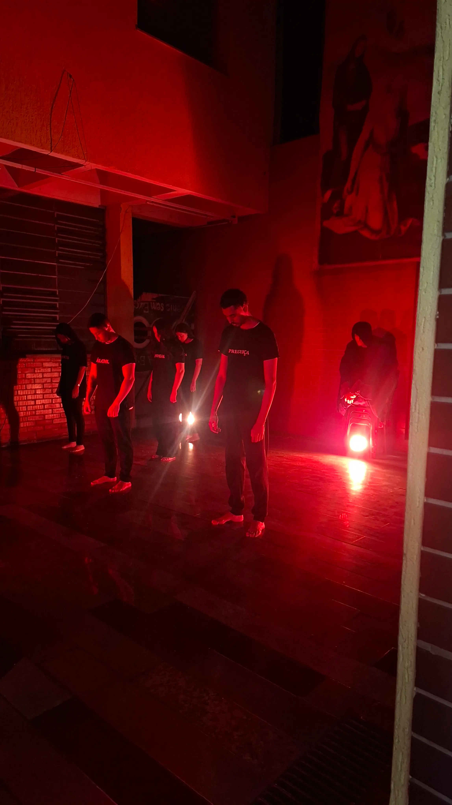
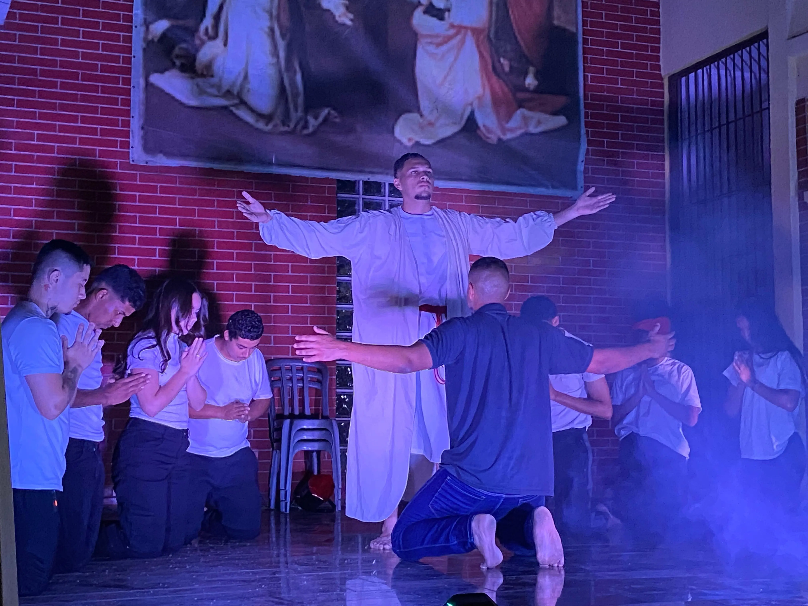
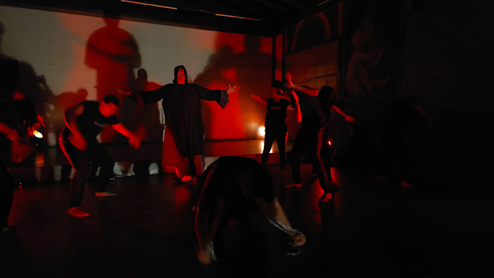
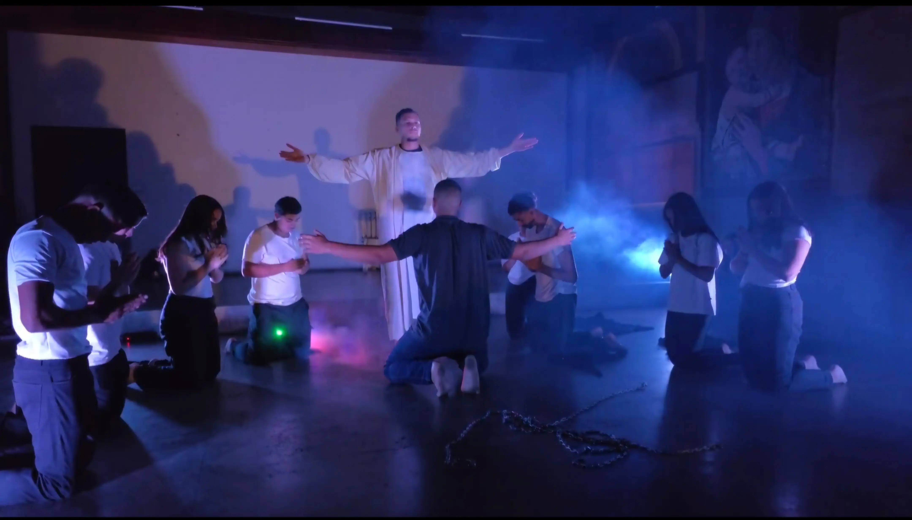
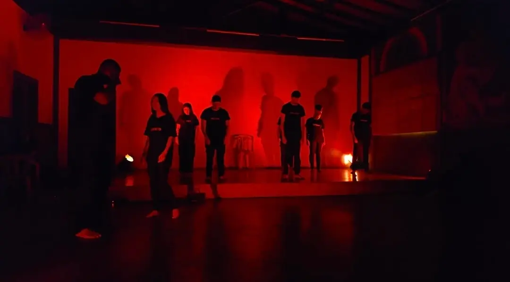

Ensaios LifeHouse
No ensaio, cada movimento é trabalhado com muita atenção para que tudo aconteça no momento certo, criando uma sequência bem estruturada e organizada. Cada ação é pensada para ter um significado claro dentro da cena, permitindo que tudo se conecte de forma natural e progressiva. A construção dos movimentos acontece aos poucos, com foco em manter uma continuidade que faça sentido do início ao fim. Dessa forma, cada parte da apresentação contribui para formar algo completo, envolvente e capaz de prender a atenção de quem estiver assistindo, mesmo sem o uso de falas ou explicações diretas.
As cenas são repetidas diversas vezes para que cada gesto, olhar e ação consigam transmitir exatamente a emoção desejada. A expressão corporal se torna o principal meio de comunicação, fazendo com que pequenos detalhes ganhem uma grande importância dentro da apresentação. A forma de andar, a postura, a intensidade dos movimentos e o tempo de cada ação são ajustados para que tudo fique mais claro e impactante. Esse cuidado permite que cada cena consiga expressar sentimentos de forma verdadeira, criando uma conexão mais forte com quem está assistindo.
Cada parte do ensaio é voltada para alinhar todos os elementos da apresentação, desde a posição de cada pessoa no espaço até a sequência dos acontecimentos dentro da história. Tudo é organizado de forma estratégica para que as cenas se conectem de maneira fluida, sem quebras ou confusões. Essa organização permite que a apresentação tenha uma linha clara, facilitando o entendimento e tornando cada momento mais significativo. A junção de todos esses detalhes faz com que a história seja transmitida de forma completa e envolvente.
Com dedicação, o ensaio vai fortalecendo cada cena, trazendo mais presença, intensidade e impacto para a apresentação como um todo. Aos poucos, cada movimento ganha mais firmeza, cada ação se torna mais marcante e cada parte da encenação passa a ter mais significado. Esse processo permite que a apresentação evolua e se torne cada vez mais envolvente, criando momentos que realmente chamam a atenção e conseguem transmitir a mensagem de forma profunda e duradoura.
Apresentação LifeHouse
Na apresentação, tudo o que foi trabalhado durante os ensaios ganha vida diante do público, criando uma sequência de cenas que se conectam de forma intensa e envolvente. Cada movimento, gesto e expressão acontece no momento certo, formando uma narrativa clara mesmo sem o uso de palavras. A forma como cada cena é executada permite que quem assiste compreenda a mensagem apenas observando, sentindo cada detalhe e se envolvendo com a história apresentada.
Durante a apresentação, a intensidade das cenas se torna ainda mais evidente, fazendo com que cada ação tenha um impacto maior. A conexão entre os participantes, a firmeza dos movimentos e a expressão transmitida em cada momento contribuem para criar uma experiência marcante. Tudo acontece de forma contínua, mantendo a atenção do público e permitindo que a mensagem seja sentida de maneira profunda, tornando cada cena significativa do início ao fim.
Fotos LifeHouse

Nesta cena, a personagem é acolhida por Nossa Senhora, que a abraça e a conduz novamente até Jesus, mostrando o caminho de volta. É um momento de amor e intercessão, onde Maria a ajuda a reencontrar a presença de Cristo. Porém, ao tentar correr em direção a Ele, as influências negativas surgem novamente, tentando impedi-la de chegar até Jesus, representando as dificuldades e tentações que aparecem justamente quando decidimos voltar para Deus.

Nesta cena, Jesus se coloca à frente da personagem, enfrentando diretamente as influências negativas que tentam se aproximar dela. Ele age como um verdadeiro defensor, impedindo que o mal avance, mostrando que mesmo quando estamos fracos, Ele luta por nós e nos protege com sua presença.

Aqui acontece um dos momentos mais fortes da apresentação: o abraço entre a personagem e Jesus. Após vencer todas as influências negativas que tentavam afastá-la, Jesus a acolhe novamente com amor. Esse momento representa o perdão, a misericórdia e o recomeço, mostrando que, não importa o quanto alguém se afaste, sempre existe um caminho de volta através do amor de Deus.

Aqui vemos Jesus intervindo mais uma vez, afastando as forças negativas que tentam puxar a personagem para longe. É um momento de vitória e autoridade, onde Ele mostra que é mais forte que qualquer influência, garantindo proteção e segurança para aqueles que se aproximam dEle.
Ensaios Set Me Free
A peça Set Me Free constrói sua narrativa a partir de uma forte carga emocional, explorando a luta interna entre aquilo que aprisiona e o desejo profundo de liberdade. Cada cena é pensada para transmitir esse conflito de forma intensa, utilizando não apenas falas, mas principalmente movimentos e expressões que revelam sentimentos muitas vezes difíceis de explicar. A construção da história acontece de maneira progressiva, permitindo que o público acompanhe essa jornada de transformação, onde o peso das correntes simbólicas vai sendo confrontado aos poucos. Dessa forma, a apresentação cria uma conexão direta com quem assiste, despertando reflexões sobre medos, culpas e tudo aquilo que impede alguém de seguir em frente.
Ao longo de Set Me Free, a repetição de gestos e ações ganha um significado ainda mais profundo, reforçando a ideia de ciclos que prendem e dificultam a mudança. Cada detalhe, desde o olhar até a postura dos personagens, contribui para mostrar como essas prisões internas se manifestam no dia a dia. A intensidade das cenas cresce conforme a peça avança, fazendo com que o público sinta o peso dessas limitações e, ao mesmo tempo, o desejo de superá-las. Essa construção cuidadosa permite que pequenas ações tenham grande impacto, tornando a experiência mais envolvente e significativa, sem depender exclusivamente de diálogos extensos.
A organização da peça Set Me Free é pensada para conduzir o espectador por uma jornada clara e envolvente, onde cada momento possui um propósito dentro da história. A transição entre as cenas acontece de forma fluida, garantindo que a mensagem principal seja compreendida sem interrupções ou quebras bruscas. Com o avanço da apresentação, percebe-se um fortalecimento na expressão dos personagens, que passam a transmitir mais intensidade, presença e significado em cada movimento. Esse desenvolvimento gradual torna a experiência mais marcante, permitindo que o público não apenas assista, mas sinta a transformação acontecendo, resultando em uma mensagem final forte, impactante e duradoura.
Apresentação Set Me Free
Durante a apresentação de Set Me Free, cada cena ganha vida de forma intensa e envolvente, fazendo com que o público não apenas assista, mas sinta cada momento apresentado. A combinação entre movimentos, expressões e a construção emocional cria uma atmosfera que prende a atenção do início ao fim. Não se trata apenas de contar uma história, mas de fazer com que cada pessoa presente se identifique com o que está sendo mostrado no palco. A força da encenação está justamente nessa capacidade de tocar o interior de quem assiste, despertando sentimentos que muitas vezes estavam guardados e trazendo à tona reflexões profundas sobre liberdade e superação.
O impacto de Set Me Free se torna ainda mais evidente conforme a apresentação avança, criando uma conexão cada vez mais forte com o público. As cenas carregadas de significado fazem com que quem está assistindo se veja refletido em diferentes momentos da peça, reconhecendo suas próprias lutas e desafios. Essa identificação transforma a experiência em algo pessoal, onde cada gesto e cada ação ganham um novo sentido. A intensidade emocional presente na encenação faz com que o silêncio, os olhares e até os pequenos movimentos tenham um grande peso, tornando tudo mais marcante e difícil de esquecer.
Ao final de Set Me Free, o impacto gerado vai além do palco, permanecendo com o público mesmo após o término da apresentação. A mensagem transmitida não se limita ao momento da encenação, mas continua ecoando na mente e no coração de quem assistiu. Esse efeito duradouro é resultado de uma construção cuidadosa, que consegue envolver, emocionar e provocar reflexão ao mesmo tempo. A peça não apenas entretém, mas também transforma, levando cada pessoa a repensar suas próprias prisões e a considerar a possibilidade de buscar sua própria liberdade.
Fotos Set Me Free

Nesta imagem, a cena apresenta todos os personagens que representam os pecados reunidos, com iluminação vermelha intensa, reforçando o clima de escuridão espiritual, tentação e presença do mal. Os personagens estão vestidos de preto, com a cabeça abaixada e postura mais rígida, transmitindo uma sensação de opressão e seriedade. Cada um parece representar um pecado diferente. Em algumas camisetas é possível ver palavras como "Preguiça" e "Álcool", indicando pecados ou tentações específicas. No centro, há a figura que representa o diabo, destacada pela posição mais central e pela postura semelhante aos demais, mas com maior destaque visual. A presença dele no meio dos outros pecados reforça a ideia de liderança ou domínio sobre eles. A iluminação vermelha forte, junto com as sombras projetadas na parede, cria uma atmosfera pesada e simbólica, mostrando a força e a união dos pecados.

Nesta imagem, a cena representa o momento da libertação e do encontro com Jesus. No centro, há uma pessoa vestida de branco com os braços abertos, representando Jesus. A postura transmite acolhimento, misericórdia e salvação. A iluminação clara e azulada cria uma atmosfera de paz, contraste direto com as cenas anteriores em vermelho. À frente, ajoelhado, está o homem que representa todos nós. Ele aparece com os braços abertos em direção a Jesus, simbolizando entrega, arrependimento e busca por libertação. Ao redor, outras pessoas também estão ajoelhadas e em oração, com roupas claras, representando conversão, humildade e mudança de vida. A fumaça leve no ambiente reforça o clima espiritual e solene da cena. Ao fundo, há uma imagem religiosa grande, que reforça ainda mais o contexto espiritual e a mensagem da encenação.

A pessoa ao centro, vestindo uma túnica preta e com os braços abertos, representando o diabo, transmite uma sensação de domínio e tentação, como se estivesse influenciando todos ao redor. A pessoa ajoelhada, presa por correntes, simboliza o ser humano aprisionado pelos próprios pecados, refletindo sofrimento, fragilidade e luta interior. As pessoas ao redor, representando os pecados, cercam a cena e reforçam a ideia de tentação e opressão, mostrando como essas influências dificultam a libertação.

No centro, há uma pessoa vestida de branco, com os braços abertos, representando Jesus. A iluminação agora é mais clara, com tons azulados e suaves, transmitindo paz, esperança e salvação — em contraste com a iluminação vermelha e sombria da imagem anterior. Ao redor, várias pessoas estão ajoelhadas, com a cabeça abaixada e em atitude de oração. Isso sugere arrependimento, entrega e conversão. No centro, ajoelhado de frente para Jesus, está a pessoa que antes estava com correntes. Agora, as correntes aparecem no chão, soltas, simbolizando que houve libertação dos pecados. A mensagem da cena parece ser: Jesus liberta o ser humano da escravidão do pecado.

Nesta imagem, a cena volta ao clima mais sombrio e de tentação, com iluminação totalmente vermelha, que simboliza perigo, pecado e conflito espiritual. À esquerda, há uma pessoa inclinada em direção a um menino, como se estivesse conversando ou sussurrando algo. Essa pessoa representa um dos pecados tentando persuadir o menino — que simboliza todos nós — a cair novamente no erro. O menino aparece com a cabeça levemente abaixada, o que pode indicar dúvida, fragilidade ou luta interior diante da tentação. Ao fundo, os outros personagens vestidos de preto estão parados, com posturas mais rígidas e sombrias, representando os demais pecados aguardando ou observando. As sombras projetadas na parede aumentam ainda mais o efeito dramático, como se os pecados fossem maiores ou mais ameaçadores.